The DESR Lab is the Makerspace specialized in the applications of Geotechnical Internet of Things (Geo-IoT), Deep Learning, and Big Data Analytics on the sustainable city development, e.g., critical infrastructure monitoring and slope health monitoring, and an open platform for geotechnical industries to collaborate and share resource.
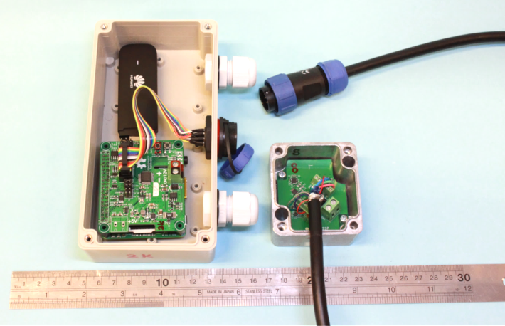
The Smart Soil Particle sensor for slope health monitoring (Geo-IoT sensor node).
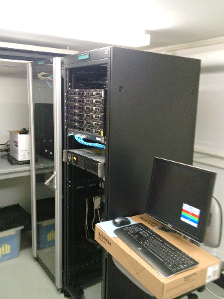
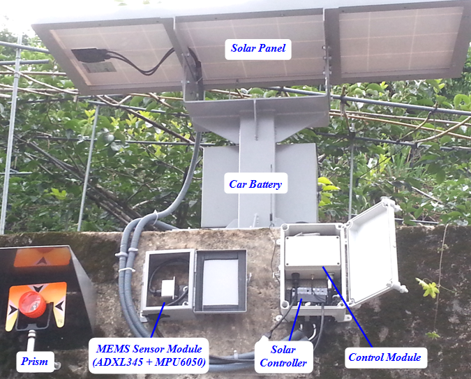
The SSP installed at field.
Big data server farm at the DESR Lab.
AI & BIM for Automated defect inspection of concrete structures
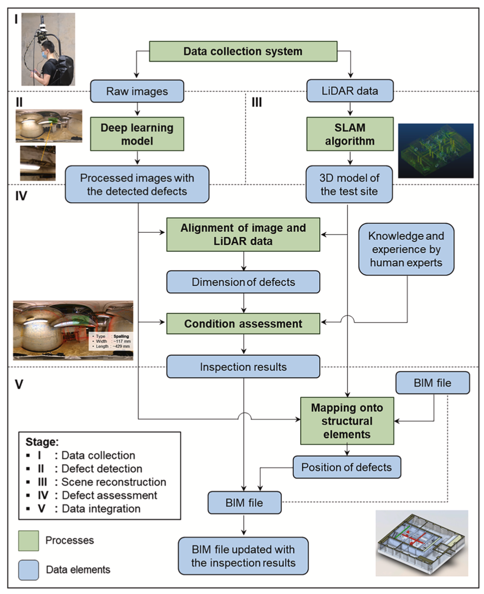
Publications
- Chow, J.K., Su, Z., Wu, J., Tan, P.S. Mao, X. and Wang, Y.H.
(2020). “Anomaly detection of defects on concrete structures with the convolutional
autoencoder,” Advanced Engineering Informatics, Vol. 45, 101105.
- Chow, J.K., Su, Z., Wu, J., Li, Z., Tan, P.S. Liu, K.F., Mao,
X. and Wang, Y.H. (2020). “Artificial intelligence-empowered pipeline for
image-based inspection of the civil infrastructures,” Automation in
Construction, 120, 103372.
- Chow, J.K., Liu, K.F., Tan, P.S., Su, Z., Wu J., Li Z., and
Wang, Y.H. (2021). “Automated defect inspection of concrete structures,” Automation
in Construction,” Vol. 132, 103959.
Green AI for bird watching and monitoring
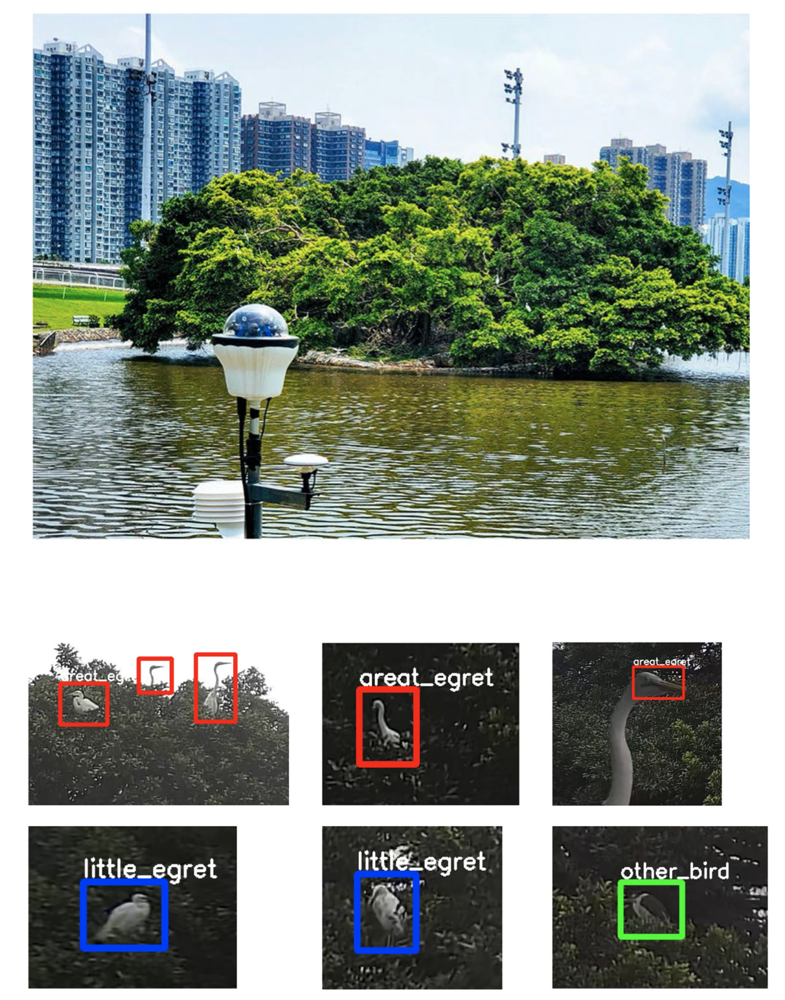
Publications
- Mao, X. Chow, J.K., Tan, P.S., Liu, K.F., Wu, J., Su. Z.,
Cheong, Y.H., Ooi, G.H., Pang, C.C., Wang, Y.H. (2021). “Domain
randomization‑enhanced deep learning models for bird detection,”
Scientific Reports, 11,639. https://doi.org/10.1038/s41598-020-80101-x.
- Government news: Green AI protects HK
wildlife
https://www.news.gov.hk/eng/2019/06/20190606/20190606_133241_198.html
Deep learning-enhanced extraction of drainage
networks
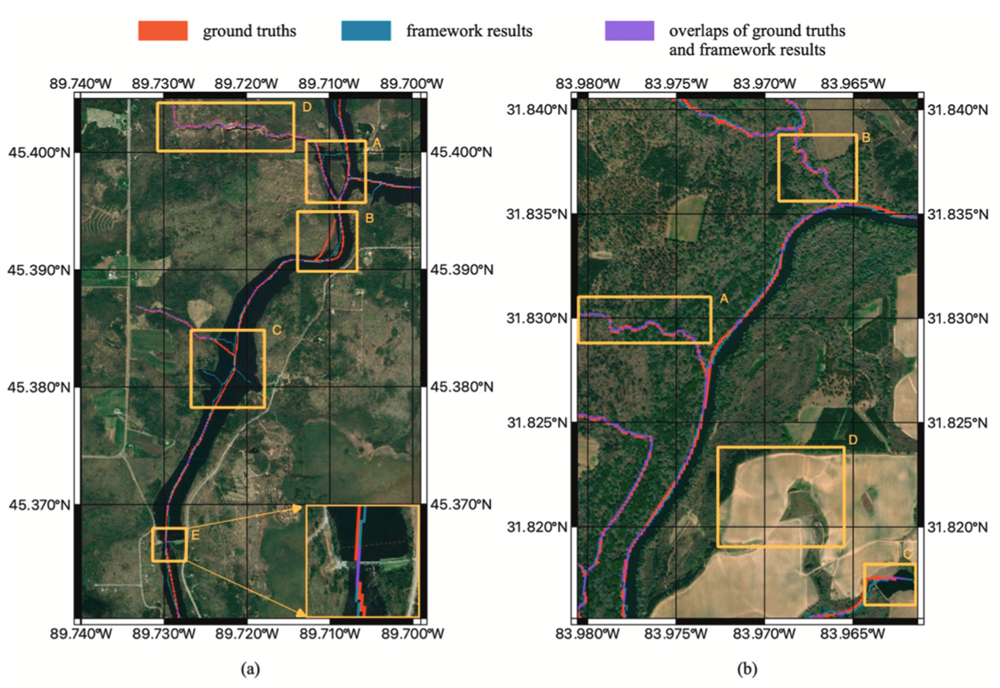
Publications
- Mao, X., Chow, J.K., Su, Z., Wang, Y.-H., Li, J., Wu, T., and Li,
T. (2021). Deep learning-enhanced extraction of drainage networks from digital
elevation models. Environmental Modelling and Software, Volume 144, 105135.
Fabric
characterizations using the deep learning-based
technique
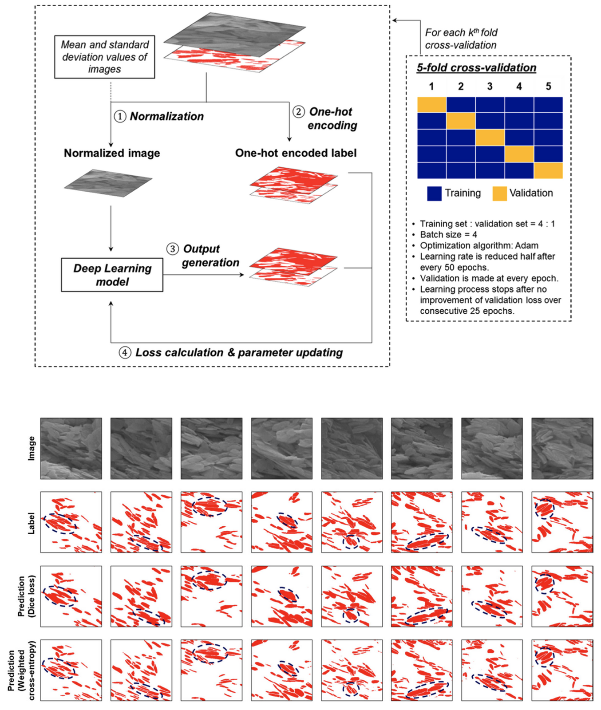
Publications
- Chow, J.K., Li, Z., Su, Z. and Wang, Y.H. (2021). “Characterization
of particle orientation of kaolinite samples using the deep learning-based
technique,” Acta Geotechnica, https://doi.org/10.1007/s11440-021-01266-x
Automated landslide inventory mapping using the deep learning-based technique
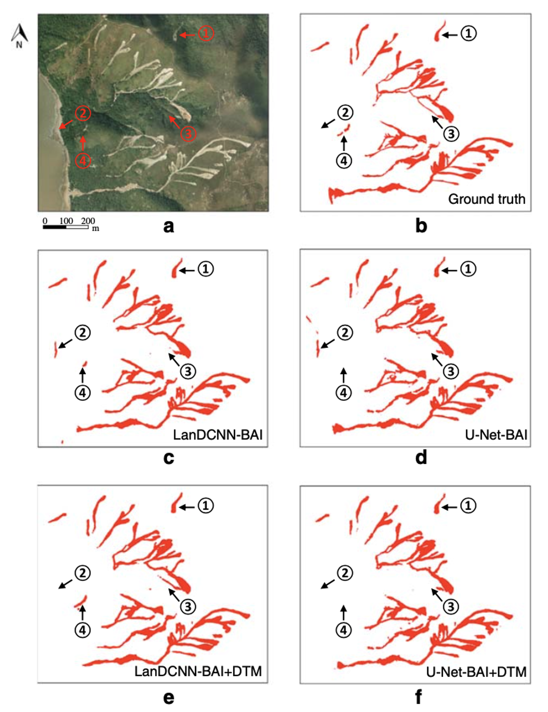
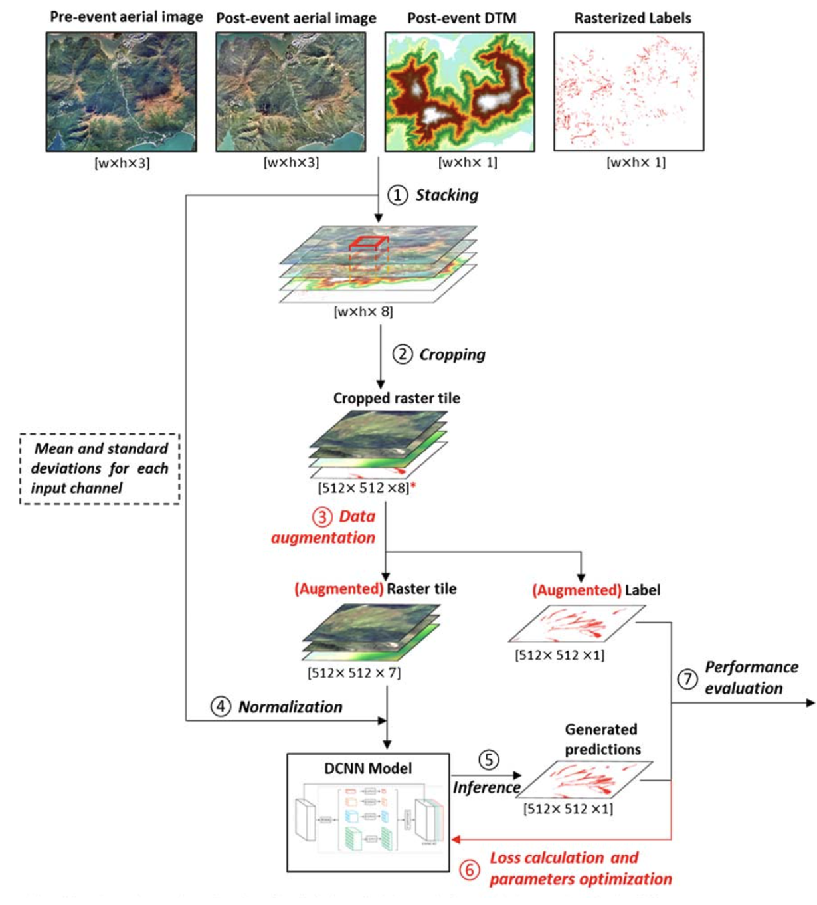
Publications
- Su, Z., Chow, J.K., Tan, P.S., Ho, Y.K. and Wang, Y.H. (2020). “Deep
convolutional neural network–based pixel-wise landslide inventory mapping,”
Landslides, 18, pp. 1421–1443. DOI 10.1007/s10346-020-01557-6.
Internet
of Tree Things (IOTT) – LoRa-based tree monitoring system
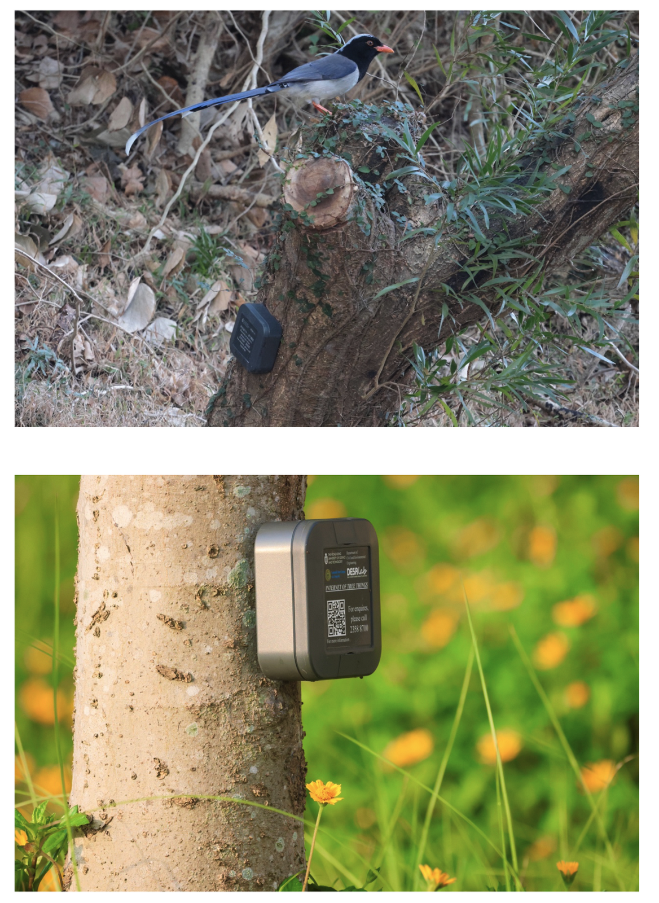
Sustainable
smart campus project (HKUST) - You will see a Hoopoe
Green AI
camera for bird watching
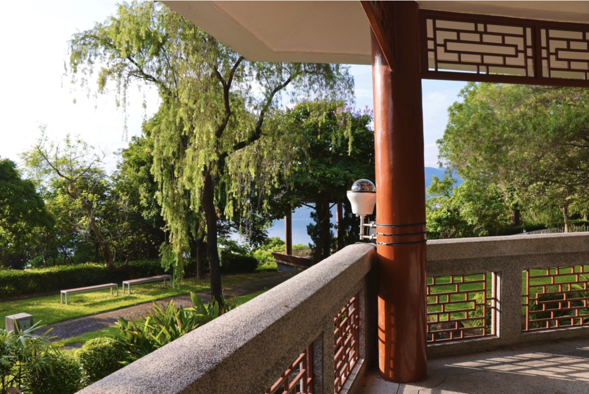
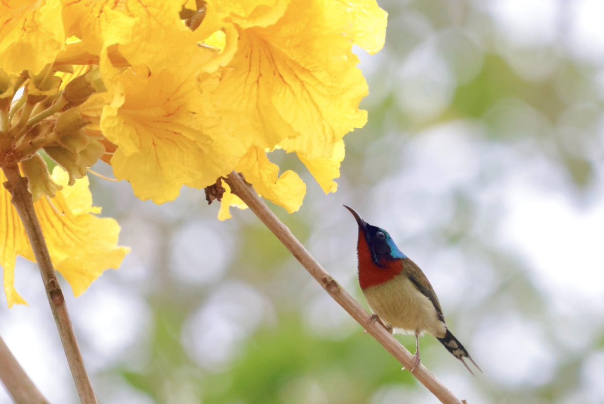
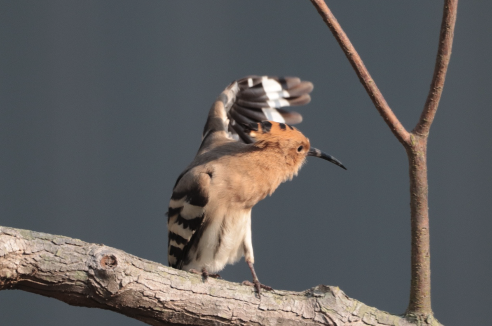